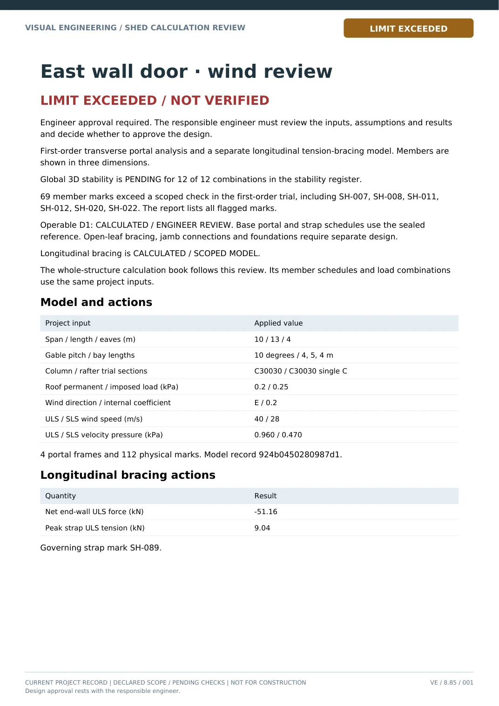

Operable east wall door
A 2 × 2 m door is framed in the first east end-wall bay of a 10 × 13 m shed. The study uses east wind at 40 m/s ultimate and 28 m/s service. Compare the sealed leaf at Cpi +0.20 with the open leaf at +0.70 and −0.50.
Opening the leaf removes 4 m² of loaded wall. In the negative internal-pressure case the remaining face carries −46.550 kN along global Z. The positive case gives a peak transverse portal moment of 27.546 kNm. Opening connections, bracing and foundations require engineering review.
Loading the report…
